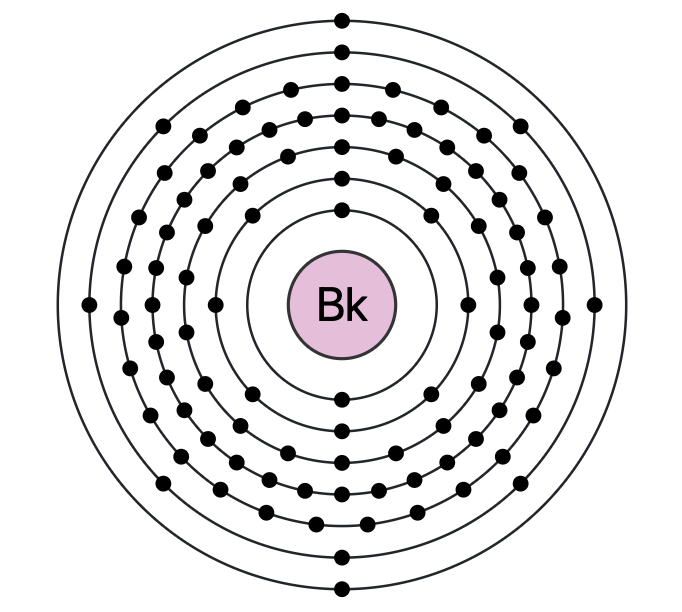

Atomic Number 97 | A Synthetic Radioactive Element

Overview
Berkelium is a chemical element with the symbol Bk and atomic number 97.
It is a synthetic, radioactive metal belonging to the actinide series.
Berkelium was first synthesized in December 1949 by Glenn T. Seaborg, Stanley G. Thompson, and Albert Ghiorso at the University of California, Berkeley.
Named after the city of Berkeley, California, berkelium is primarily used in scientific research to study heavy elements and their properties.
Properties & Uses
Atomic Number: 97
Atomic Mass: 247 u (most stable isotope)
Electron Configuration: [Rn] 5f9 7s2
Group / Block: Actinides (f-block)
Standard State: Solid at 25 °C
Melting Point: 986 °C
Boiling Point: 2627 °C
Density: 14.78 g/cm³
Berkelium is used in scientific research, particularly in the synthesis of heavier transuranium elements and transactinides.
Its radioactive properties make it valuable in nuclear chemistry studies.
Berkelium in Action
Berkelium is a synthetic element with limited practical applications.
However, its role in scientific research is crucial for understanding the properties of heavy elements and their behavior in various environments.
Historical Perspective
Berkelium was synthesized for the first time in 1949 at the University of California, Berkeley, by bombarding americium with alpha particles.
Its name honors the city where it was discovered, reflecting the tradition of naming elements after places of significance.
While berkelium has limited practical uses, its role in scientific research is critical for understanding the properties of heavy elements.